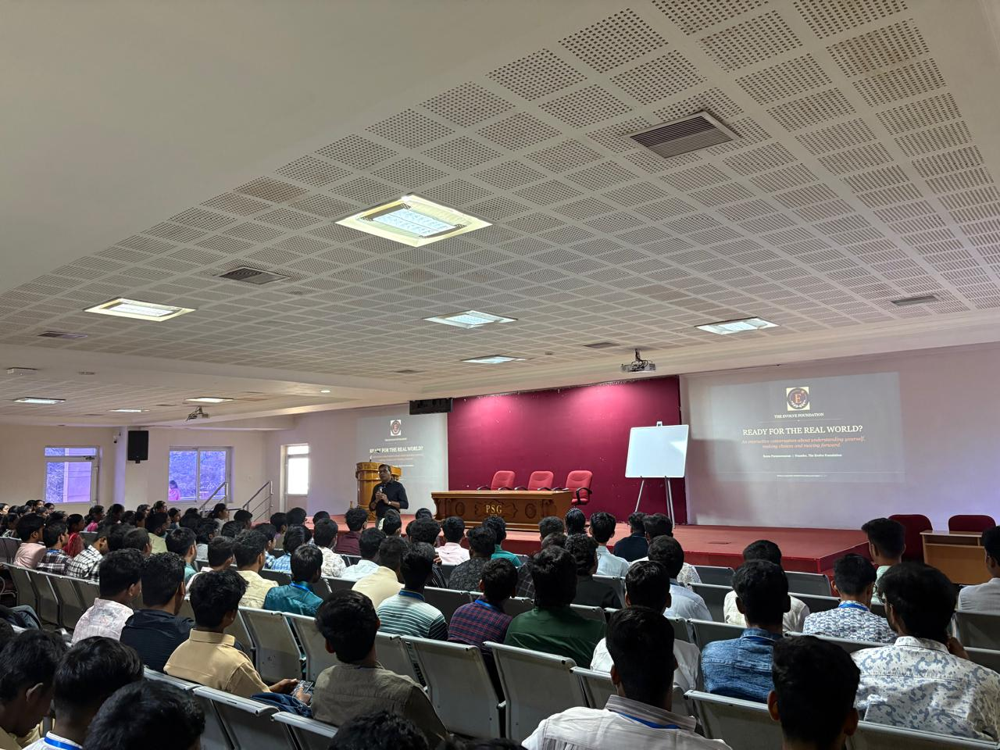

THE FOUNDER
Rams Parameswaran
Rams is the Founder of The Evolve Foundation and personally facilitates its programmes and learning experiences.

THE PERSON BEHIND THE WORK
A career in technology, leadership and mentoring shaped the conviction that self-understanding is not a soft extra. It changes the quality of decisions people make.
THE PATTERN
People who thrive often understand themselves earlier.
Across nearly 30 years of building and leading technology organisations in the United States and India, Rams saw the same pattern repeatedly.
He hired, coached and mentored professionals across global financial institutions including Citigroup, Bank of America, BNY Mellon and Fiserv. Those who thrived were not necessarily the people with the most impressive credentials. They were often the people who understood their strengths, could explain their choices with confidence and took ownership of their direction.
Very few had been taught how to do this. Most discovered it later through experience, uncertainty, mistakes and reflection.
WHY THE EVOLVE FOUNDATION EXISTS
Help young people develop that self-understanding earlier.
That belief sits at the heart of every programme and learning experience created through The Evolve Foundation.
Every young person deserves the opportunity to understand themselves before making decisions that shape their future.
Rams personally facilitates the programmes and learning experiences, bringing the same practical, reflective approach that shaped his work with teams and leaders.

PSG College of Technology · student session
TAKING THE CONVERSATION TO STUDENTS
From ideas to real conversations.
At PSG College of Technology, Rams recently spent time with approximately 150 students, introducing The Evolve Foundation and speaking with them about the questions they face as they navigate college, career choices and what comes next.
He also introduced students to Launchpad, the eight-week programme designed to help college students understand themselves better, think through their choices and develop greater clarity about the direction they want to take.
THE EVOLVE FOUNDATION
Helping young people understand themselves and navigate life well.
Start a conversation about bringing this work to students, parents, colleges or organisations.
Get in touch →